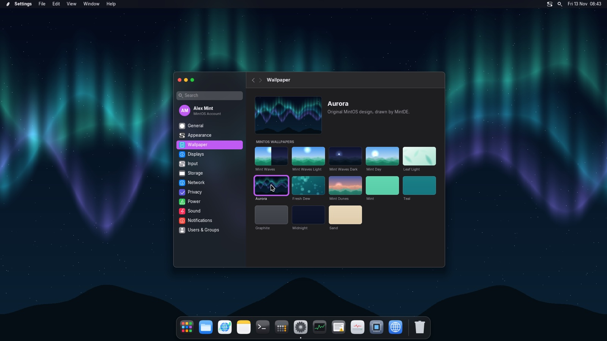
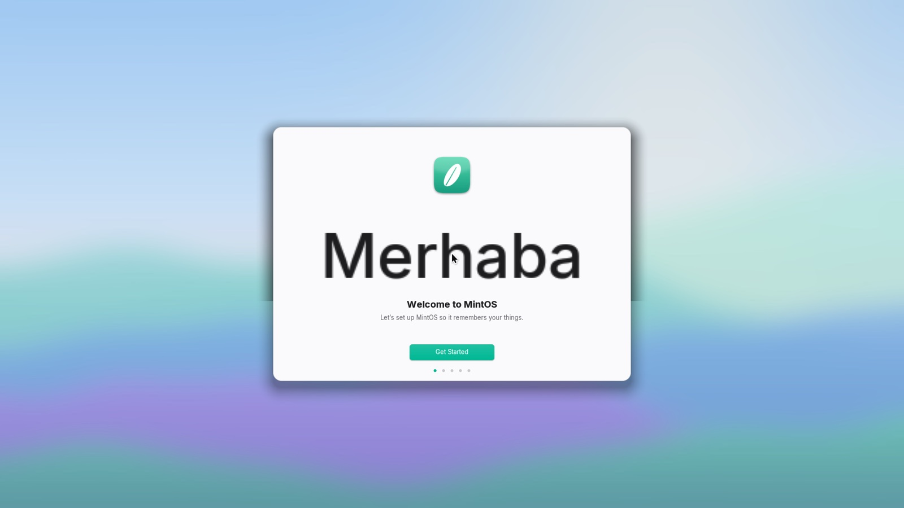
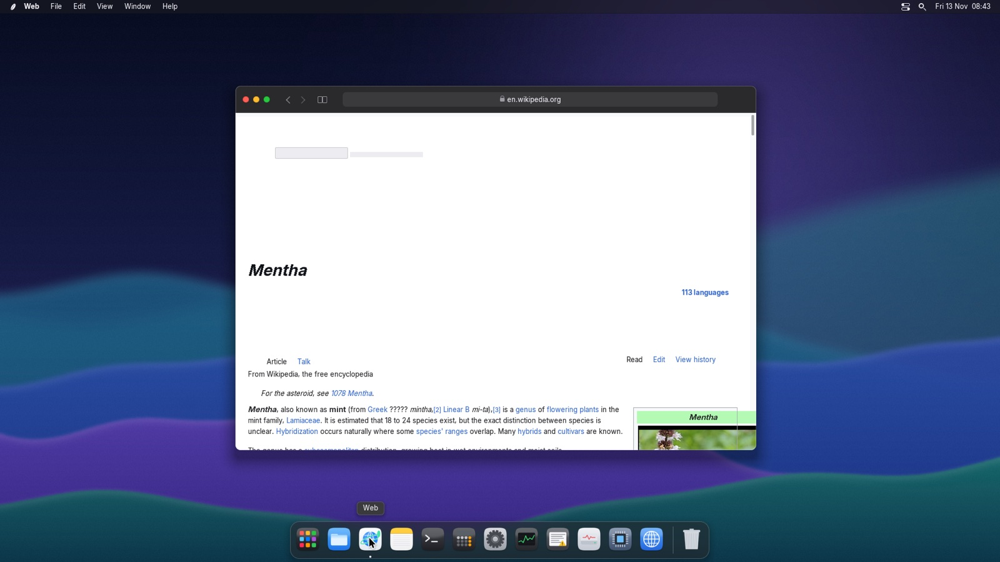
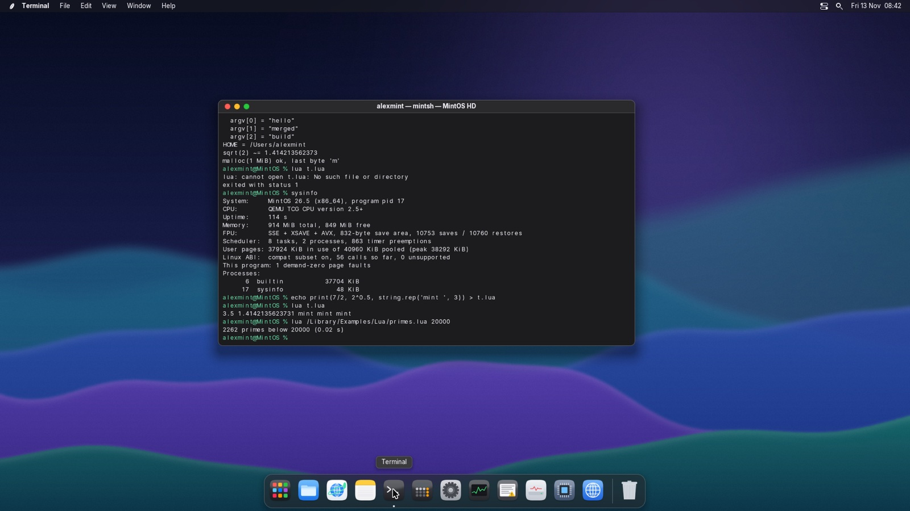
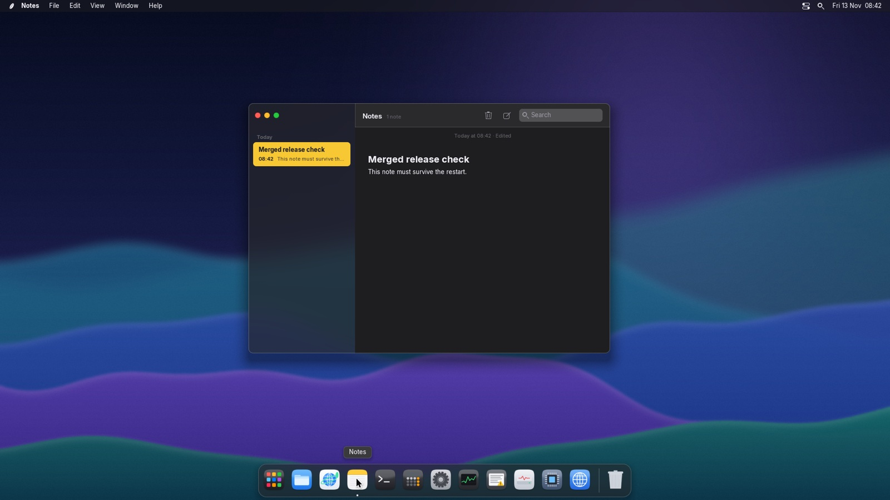
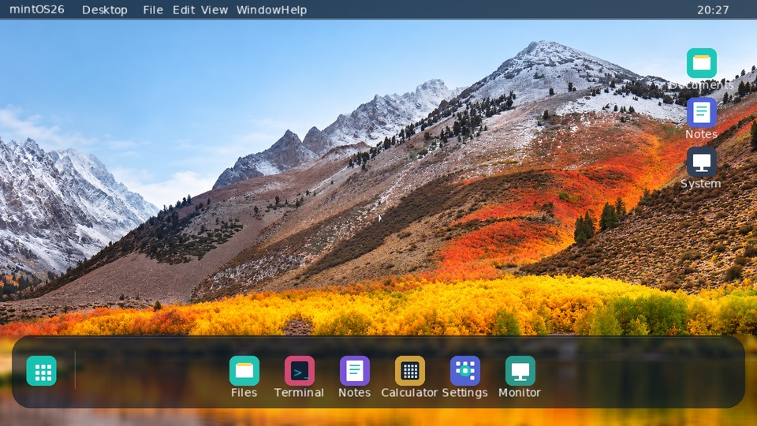

CPU bring-up
Own GDT, 64-bit TSS and IDT with guarded fault stacks. FPU, SSE and AVX state is saved per task with XSAVE.
26.5.014.0 · MintDE 2.4.0 · experimental
MintOS26 is a freestanding x86-64 OS with its own UEFI loader, kernel, filesystem, network stack, web engine, sound driver and a macOS-style desktop. There is no Linux underneath — every layer is MintOS.

MintDE 2.4.0 on the native MintOS26 kernel, with the original Aurora wallpaper — captured in QEMU on 13 November 2026.
Inside
From the first UEFI call to the last pixel of the dock. Two ways to boot, one kernel, and a desktop that lives in user space and talks to the kernel only through validated system calls.
Loads BOOTX64.EFI from the EFI system partition.
Enter, 1 or a 3-second timeout picks UEFI Desktop. 2 or M starts native MintDE.
A firmware-mediated desktop that uses UEFI services for display, input, file volumes and bounded HTTP GET.
Takes over the machine: its own GDT, IDT, paging, scheduler and drivers.
Reaches the kernel only through the versioned int 0x80 syscall ABI.
Own GDT, 64-bit TSS and IDT with guarded fault stacks. FPU, SSE and AVX state is saved per task with XSAVE.
NX paging, a frame pool with demand-zero pages, mmap/brk, and isolated address spaces of up to 64 MiB per process.
A cooperative kernel on a 100 Hz timer, with preemptive 20 ms time slices for user programs.
ELF64 programs spawned from disk with argv, pipes, wait and kill. A crashing program is contained, never the kernel.
MintOS's own validated int 0x80 ABI, plus an explicit Linux-x86-64 subset so the musl C library and Lua run unmodified.
MintOS's own copy-on-write, checksummed filesystem. A power cut leaves the last saved state, never a broken disk.
AHCI SATA with 4 KiB DMA transfers. MintOS writes only inside partitions it created; every other disk stays read-only.
Intel E1000-family driver and MintOS's own IPv4 stack: DHCP, DNS, TCP, and TLS 1.3/1.2 with certificate checks.
A polled xHCI driver for USB keyboards, mice and tablets, alongside PS/2.
An Intel High Definition Audio driver and mixer that plays MintOS's original startup chime and UI sounds.
Its own HTML and CSS engine with images, tables, floats, forms, cookies and downloads. Scripts are never run.
A shared-canvas compositor with blur and vibrancy, a boot animation, and wallpapers drawn with integer math.
MintDE
MintDE 2.4 is the native Mint Desktop Environment: macOS-style windows, menu bar, Dock, Launchpad, Spotlight, Control Center and Notification Center, all running in ring 3. It has its own personality too: an original startup chime, a mint-leaf boot animation, and wallpapers including the dynamic Mint Day, whose sky follows the time of day.
Dark mode, the original Aurora wallpaper and System Settings. Settings, wallpaper and accent are saved on MintOS HD and come back after a restart.

On first boot the Setup Assistant greets you in ten languages, prepares a blank disk as MintOS HD, and creates your account with its own home folder.

Web draws real pages with MintOS's own engine: Wikipedia over HTTPS with styling, links, the infobox and its photo. Scripts are never run.

Terminal runs real programs from MintOS HD: the musl-based hello and sysinfo, and Lua 5.4 running a script with floating point.

Notes keeps many notes, grouped by date, as text files in ~/Documents/Notes. They are saved about a second after you stop typing.

UEFI Desktop is the default boot path and the always-available recovery mode. It runs on firmware services, before the kernel takes over.
Try it
This is a small browser re-creation of the MintDE Terminal. Its replies follow MintDE 2.4.0, and the hardware values come from a real 26.5.014.0 QEMU boot log. Programs such as lua only run in the real OS.
Try
Status
MintOS26 is an experimental hobby OS, tested in virtual machines. Test logs are kept with every release, and nothing is called working until it has been seen working.
Releases
Each MintOS26 release ships with a matching MintDE version, its own changelog and the test evidence behind it.
Setup Assistant and accounts, settings and notes saved on disk, Lua and C programs, a new HTML/CSS web engine with images and forms, TLS 1.2, HD Audio sound, the boot animation, wallpapers and Notification Center.
Release & ISO → · Changelog →MintOS's own copy-on-write filesystem on disks it initializes, Finder-style Files with Trash, and Notes saved to disk.
Changelog →MintOS's own crypto library and TLS 1.3 client with certificate checks against Mozilla's roots. Web opens HTTPS sites.
Changelog →xHCI USB input, Intel Ethernet, an IPv4/TCP stack with DHCP and DNS, and the first Web browser.
Changelog →Windows, Dock, Launchpad, Spotlight and Control Center on a shared canvas, plus a real clock.
Changelog →Display modes up to 4K, write-combined framebuffer, ACPI shutdown and restart, and RAID-mode SATA.
Changelog →Switched the network self-test to the loopback path VirtualBox's emulated 82540EM actually uses, and made every changelog row clickable in About.
Changelog →MAC-only loopback, an explicit link-reset check before queuing, and much richer descriptor snapshots in net status.
root#mintos > promptCommands now stand out from their output, and PHY register access arrived for network diagnostics.
Changelog →An opt-in Intel 82540EM driver with bounded DMA rings, plus the net command family.
A crashing user process no longer brings the system down. PCI BAR and interrupt decoding, and the resources command.
Per-app PNG icons, backdrop-sampled glass panels, real dropdowns and a VFS mount table with /session and /Volumes.
Up to eight read-only FAT16 volumes, standard FAT16 disks without MintOS seed files, and translucent surfaces.
Changelog →The startup selector, separate About pages for the OS and the desktop, and Disk Utility.
Changelog →Download
Download the 26.5.014.0 ISO and boot it in QEMU with UEFI firmware. Give it a blank virtual disk, and the Setup Assistant turns that disk into MintOS HD for your account and files.
QEMU with OVMF (UEFI) firmware. On macOS with Homebrew:
brew install qemuMintOS only ever writes to a disk that starts out blank:
qemu-img create -f raw mintos-hd.img 1GAt the selector press 2 within three seconds for native MintDE. The firmware path below is Homebrew's; adjust it on Linux.
cp /opt/homebrew/share/qemu/edk2-i386-vars.fd vars.fd
qemu-system-x86_64 -machine q35 -m 2G -cpu max \
-drive if=pflash,format=raw,readonly=on,file=/opt/homebrew/share/qemu/edk2-x86_64-code.fd \
-drive if=pflash,format=raw,file=vars.fd \
-cdrom mintos26-26.5.014.0-uefi.iso \
-drive if=none,id=hd,format=raw,file=mintos-hd.img -device ide-hd,drive=hd,bus=ide.1 \
-device qemu-xhci,id=xhci -device usb-kbd,bus=xhci.0 -device usb-tablet,bus=xhci.0 \
-nic user,model=e1000 \
-audiodev coreaudio,id=snd -device ich9-intel-hda -device hda-output,audiodev=sndOn Linux, use -audiodev pa,id=snd (or drop the last line for no sound).
Build
Everything is built from source with clang and LLVM's linkers. The build produces the EFI app, kernel, disk images, the bundled programs and a bootable ISO.
You need clang, lld-link and ld.lld, GNU make and Python 3. On macOS, the Xcode command-line tools plus Homebrew are enough:
brew install lld qemu binutilsClone the repository, then build everything and run the host-side checks. On Apple Silicon, the bundled wrapper runs the x86-64 test programs under Rosetta 2:
git clone https://github.com/thejakubruzicka/MintOS26.git
cd MintOS26
make clean all
PATH="$PWD/tools/macos-host:/opt/homebrew/opt/binutils/bin:$PATH" make checkThe helper script boots the newest image with a persistent MintOS disk, USB input and sound:
tools/run_qemu.sh --mintos-disk -- \
-device qemu-xhci,id=xhci -device usb-kbd,bus=xhci.0 -device usb-tablet,bus=xhci.0 \
-audiodev coreaudio,id=snd0 -device ich9-intel-hda -device hda-output,audiodev=snd0